概观
在本章中，你将学习卷积神经网络(CNN)如何处理图像数据。您还将学习如何在图像数据上正确使用CNN。
本章结束时，您将能够使用TensorFlow创建自己的CNN，用于对任何图像数据集进行分类和对象识别。
简介
本章涵盖CNN。CNN使用非常适合从图像中提取特征的卷积层。他们使用与手头任务相关的学习过滤器。简单来说，他们非常擅长在图像中寻找模式。
在前一章中，您探索了正则化和超参数调整。您使用了L1和L2正则化，并在分类模型中添加了dropout，以防止在connect-4数据集上过度拟合。
当你用CNN深入学习的时候，你将会改变很多。在本章中，你将学习CNN如何处理图像数据的基础知识，以及如何将这些概念应用到你自己的图像分类问题中。这才是TensorFlow真正的亮点。
CNN
CNN与你迄今为止建立的ann有许多共同的组成部分。关键区别在于网络中包含一个或多个卷积层。卷积层使用滤波器(也称为内核)对输入数据进行卷积。将卷积想象成图像转换器。你有一个输入图像，它通过CNN，给你一个输出标签。每一层都有独特的功能或特殊的能力来检测图像中的曲线或边缘等图案。CNN结合了深度神经网络和核卷积的能力来转换图像，并使这些图像边缘或曲线易于模型看到。CNN有三个关键部分:
- 输入图像:原始图像数据
- 滤镜/内核:图像转换机制
- 输出标签:图像分类
下图是CNN的一个示例，其中图像在左侧输入网络，在右侧生成输出。图像分量在整个隐藏层中用更基本的分量来标识，例如在较早的隐藏层中标识的边缘。影像成分在隐藏图层中组合，形成数据集中可识别的要素。例如，在CNN中将图像分类为飞机或汽车时，可识别的特征可以是类似轮子或螺旋桨的过滤器。这些特征的组合将有助于确定图像是飞机还是汽车。
最后，输出层是一个密集层，用于确定模型的具体输出。对于二元分类模型，这可以是具有一个具有sigmoid激活函数的单元的密集层。对于更复杂的多类分类，它可能是一个具有许多单元的密集图层，由类的数量和softmax激活函数确定，用于为呈现给模型的每个影像确定一个输出标注。
图7.1: CNN
常见的CNN配置包括卷积层，随后是汇集层。这些层通常按此顺序成对使用(卷积和池化)。我们将在本章的后面讨论其原因，但现在，请将这些合并图层视为通过汇总过滤结果来减小输入图像的大小。
在深入研究卷积层之前，首先需要了解从计算机的角度来看数据是什么样的。
形象再现
首先，考虑计算机如何处理图像。对计算机来说，图像就是数字。为了能够使用图像进行分类或对象识别，您需要了解模型如何将图像输入转换为数据。图像文件中的像素只是一段数据。
在下图中，您可以看到数字8的灰度图像的像素值示例。对于28x28像素的图像，总共有784个像素。每个像素都有一个介于0和255之间的值，用于标识像素的明暗程度。在右侧，有一个大的列向量，其中列出了每个像素值。这被模型用来识别图像。
图7.2:像素值
现在您已经知道了输入数据的样子，是时候更仔细地了解卷积过程了，更具体地说，是卷积层。
卷积层
把卷积想象成一个有三个关键元素的图像转换器。首先是输入图像，然后是过滤器，最后是特征图。
本节将依次讨论这些问题，让您对图像如何在卷积层中滤波有一个清晰的了解。卷积是在输入数据上通过一个过滤窗口的过程，这将产生一个激活图，称为二维数据的3x3，其中过滤器的具体值在训练过程中学习。滤波器以与滤波器大小相等的窗口大小通过输入数据，然后应用滤波器和输入数据部分的标量积，产生所谓的激活。当该过程使用相同的过滤器在整个输入数据上继续时，产生激活图，也称为特征图。
下图说明了这一概念，图中有两个卷积层，生成了两组特征图。在从第一卷积层产生特征图之后，它们被传递到第二卷积层。第二卷积层的特征图被传递到分类器中:
图7.3:用于分类的卷积
过滤器每次操作移动的距离或步数称为0。这被称为有效填充。
让我们回顾一些关键词。有一个2x2内核。有步距，这是你移动内核的像素数。最后，无论是否添加像素，图像周围都有零填充。这确保了输出与输入的大小相同。
创建模型
从第一章开始，你会遇到不同类型的维度张量。需要注意的一件重要事情是，你只会和Conv2D一起工作。图层名Conv2D仅指滤镜或内核的移动。因此，如果你还记得卷积过程的描述，它只是在2D空间中滑动一个内核。因此，对于一个平面的正方形图像，内核只能在两个维度上滑动。
当您实现Conv2D时，您需要传入某些参数:
- 第一个参数是
filter。过滤器是输出空间的维度。 - 指定
strides，这是内核移动的像素数量。 - 然后，指定
padding，通常是valid或same，这取决于您是否想要一个与输入尺寸相同的输出。 - 最后还可以有
activation。在这里，您将指定您想要应用到输出的激活类型。如果不指定激活，它只是一个线性激活。
在继续之前，回忆一下第四章、回归和分类模型中的内容，密集层是指每个神经元都与前一层中的每个神经元相连。正如你在下面的代码中看到的，你可以很容易地用model.add(Dense(32))添加一个密集层。32是神经元的数量，后跟输入形状。AlexNet是一个具有多个卷积核的CNN的例子，它从图像中提取有趣的信息。
图7.4: AlexNet由五个卷积层和三个连接层组成
注意
AlexNet是由Alex Krizhevsky设计的一个CNN的名字。
顺序模型可以用来构建CNN。可以使用不同的方法来添加层；这里，我们将使用使用模型的add方法向模型顺序添加层的框架，或者在模型被实例化时传入所有层的列表:
model = models.Sequential() model.add(Dense(32, input_shape=(250,)))
下面是一个代码块，显示了您将在本章后面使用的代码:
our_cnn_model = models.Sequential([layers.Conv2D\
(filters = 32, \
kernel_size = (3,3),
input_shape=(28, 28, 1)), \
layers.Activation('relu'), \
layers.MaxPool2D\
(pool_size = (2, 2)), \
layers.Conv2D\
(filters = 64, \
kernel_size = (3,3)), \
layers.Activation('relu'), \
layers.MaxPool2D\
(pool_size = (2,2)), \
layers.Conv2D\
(filters = 64, \
kernel_size = (3,3)), \
layers.Activation('relu')])
当处理需要二维卷积的数据(如图像)时，使用Conv2D层。对于参数，将滤镜数量设置为32，后跟3x3像素的内核大小(示例中为(3, 3))。在第一层，你总是需要指定input_shape的尺寸，高度，宽度和深度。input_shape是您将要使用的图像的大小。您还可以选择要在层的末端应用的激活功能。
现在您已经学习了如何在模型中构建CNN层，您将在第一个练习中练习这样做。在本练习中，您将构建CNN的第一个结构，初始化模型，并向模型添加一个卷积层。
练习7.01:创建第一层来构建CNN
作为一名TensorFlow自由职业者，你被要求向你的潜在雇主展示几行代码，展示你可能如何构建CNN的第一层。他们要求您保持简单，但提供创建CNN层的最初几个步骤。在本练习中，您将完成创建CNN的第一步，即添加第一个卷积层。
按照以下步骤完成本练习:
- 打开新的Jupyter笔记本。
- 从
tensorflow.keras:import tensorflow as tf from tensorflow.keras import models, layers
导入TensorFlow库和models和layers类 - Check the TensorFlow version:
print(tf.__version__)
您应该得到以下输出:
2.6.0
- Now, use
models.Sequentialto create your model. The first layer (Conv2D) will require the number of nodes (filters), the filter size (3,3), and the shape of the input.input_shapefor your first layer will determine the shape of your input images. Add a ReLU activation layer:image_shape = (300, 300, 3) our_first_layer = models.Sequential([layers.Conv2D\ (filters = 16, \ kernel_size = (3,3), \ input_shape = image_shape), \ layers.Activation('relu')])很简单。你刚刚迈出了创建你的第一个CNN的第一步。
现在，您将继续学习卷积层之后的层类型——池层。
汇集层
池化是一种通常添加到CNN的操作，通过减少来自其跟随的卷积层的输出中的像素数量来减少图像的维度。池层缩小输入图像以提高计算效率并减少参数数量以限制过拟合的风险。
池层紧跟卷积层，被认为是CNN结构的另一个重要部分。本节将重点介绍两种类型的池:
- 最大池化
- 平均池
最大池化
使用最大池，过滤器或内核仅保留输入矩阵中的最大像素值。为了更清楚地了解正在发生的事情，考虑下面的例子。假设您有一个4x4输入。max pooling的第一步是将4x4矩阵分成四个象限。每个象限的大小都是2x2。应用大小为2的过滤器。这意味着你的过滤器将看起来完全像一个2x2矩阵。
首先将过滤器放在输入的顶部。对于最大池，该过滤器将查看其覆盖的2x2区域内的所有值。它将查找最大值，将该值发送到您的输出，并将其存储在要素地图的左上角。
图7.5:最大池化
然后，过滤器将向右移动并重复相同的过程，将值存储在2x2矩阵的右上角。一旦该操作完成，过滤器将向下滑动并从最左侧开始，再次重复相同的过程，寻找最大(或最大)值，然后将其存储在2x2矩阵的正确位置。
回想一下，滑动被称为2。重复该过程，直到四个象限中的最大值分别为8、5、7和5。同样，为了获得这些数字，您使用了一个过滤器2x2并过滤掉了那个2x2矩阵中的最大数字。
所以，在这种情况下，你的步幅是2，因为你移动了2个像素。这些是filter和stride是2。图7.6 显示了过滤器大小为3 x 3且stride为1时，最大池的实现可能是什么样子。
图7.6 中的有两个步骤。从特征图的左上方开始。使用3x3过滤器，您将查看以下数字:2、8、2、5、4、9、8、4和6，并选择最大值9。9将被放置在我们汇集的特征地图的左上角框中。如果步幅为1，您可以将滤镜向右滑动一个位置，如灰色所示。
现在，从8、2、1、4、9、6、4、6和4中寻找最大值。同样，9是最大的值，所以在汇集的特征图的顶行的中间位置添加一个9(以灰色显示)。
图7.6:汇集的要素地图
前面的池大小是(2, 2)。它指定了您将缩小比例的因素。下面更详细地看一下你可以做些什么来实现MaxPool2D:
layers.MaxPool2D(pool_size=(2, 2), strides=None, \
padding='valid')
MaxPool2D实例。代码片段使用池大小2x2初始化最大池层，并且未指定stride值，因此它将默认为池大小值。padding参数设置为valid，表示没有添加填充。下面的代码片段演示了它在CNN中的用法:
image_shape = (300, 300, 3)
our_first_model = models.Sequential([
layers.Conv2D(filters = 16, kernel_size = (3,3), \
input_shape = image_shape), \
layers.Activation('relu'), \
layers.MaxPool2D(pool_size = (2, 2)), \
layers.Conv2D(filters = 32, kernel_size = (3,3)), \
layers.Activation('relu')])
在前面的示例中，用两个卷积层创建了一个顺序模型，每个层之后是一个ReLU激活函数，第一个卷积层的激活函数之后是一个max池层。
既然您已经研究了最大池，让我们看看另一种类型的池:平均池。
平均池
平均池的操作方式与最大池相似，但它不是提取过滤器中的最大重量值，而是计算平均值。然后，它将该值传递给特征映射。图7.7 强调了最大汇集和平均汇集之间的区别。
在图7.7 中，考虑左边的4x4矩阵。左上象限中数字的平均值是13。这将是平均池值。如果是最大池，同一个左上象限会将20输出到其特征图，因为20是过滤器框架内的最大值。这是使用超参数对最大池和平均池进行的比较，其中filter和stride参数都设置为2:
图7.7:最大与平均池
对于平均池，您可以使用AveragePooling2D代替MaxPool2D。
要实现平均池代码，可以使用以下代码:
layers.AveragePooling2D(pool_size=(2, 2), strides=None, \
padding='valid')
AveragePooling2D层。与最大池化类似，可以修改pool_size、strides和padding参数。下面的代码片段演示了它在CNN中的用法:
image_shape = (300, 300, 3)
our_first_model = models.Sequential([
layers.Conv2D(filters = 16, kernel_size = (3,3), \
input_shape = image_shape), \
layers.Activation('relu'), \
layers.AveragePooling2D(pool_size = (2, 2)), \
layers.Conv2D(filters = 32, kernel_size = (3,3)), \
layers.Activation('relu')])
牢记使用池化图层的好处是一个好主意。其中一个好处是，如果对图像进行下采样，图像会缩小。这意味着你需要处理的数据更少，需要做的乘法也更少，这当然加快了速度。
到目前为止，您已经创建了第一个CNN层，并学习了如何使用池层。现在，在下面的练习中，您将使用到目前为止所学的知识为CNN构建一个池层。
练习7.02:为CNN创建一个池层
你收到了一封来自潜在雇主的电子邮件，内容是你在练习7.01 、中申请的TensorFlow自由职业工作，创建第一层以构建CNN 。电子邮件询问您是否可以展示您将如何为CNN编写池层代码。在本练习中，您将按照潜在雇主的要求，通过添加池层来构建基础模型:
- 打开新的Jupyter笔记本，导入TensorFlow库:
import tensorflow as tf from tensorflow.keras import models, layers
- 使用
models.Sequential创建您的模型。第一层，Conv2D，将需要节点的数量，过滤器的大小，以及张量的形状，就像之前的练习一样。接下来是激活层，神经网络末端的节点:image_shape = (300, 300, 3) our_first_model = models.Sequential([ layers.Conv2D(filters = 16, kernel_size = (3,3), \ input_shape = image_shape), \ layers.Activation('relu')]) - Now, add a
MaxPool2Dlayer by using the model'saddmethod:our_first_model.add(layers.MaxPool2D(pool_size = (2, 2))
在这个模型中，您创建了一个带有卷积层的CNN，接着是一个ReLU激活函数，然后是一个max池层。这些模型用三种颜色通道拍摄大小为
300x300的图像。
现在你已经成功地添加了一个MaxPool2D层到你的CNN，下一步是添加一个展平层，这样你的模型就可以使用所有的数据了。
展平图层
添加展平层是一个重要的步骤，因为您需要为神经网络提供它可以处理的数据。请记住，在您执行卷积运算后，它仍然是多维的。因此，要将您的数据改回一维形式，您将使用展平层。要实现这一点，您需要将汇集的要素地图展平成一列，如下图所示。在图7.8 中，您可以看到，您从图表左侧的输入矩阵开始，使用最终汇集的特征图，并将其扩展为单个列向量:
图7.8:展平图层
下面是一个实现的展平层:
image_shape = (300, 300, 3)
our_first_model = models.Sequential([
layers.Conv2D(filters = 16, kernel_size = (3,3), \
input_shape = image_shape), \
layers.Activation('relu'), \
layers.MaxPool2D(pool_size = (2, 2)), \
layers.Conv2D(filters = 32, kernel_size = (3,3)), \
layers.Activation('relu'), \
layers.MaxPool2D(pool_size = (2, 2)), \
layers.Flatten()])
这里，一个展平层作为最后一层添加到这个模型。现在，您已经创建了第一个CNN和池层，您将在接下来的练习中将所有的部分放在一起并构建一个CNN。
练习7.03:构建CNN
在练习7.01 、创建第一层以构建CNN 和练习7.02 、为CNN 创建池层的工作中，你被聘为自由职业者。现在你已经得到了这份工作，你的第一项任务是帮助你的初创公司制造原型产品，向投资者展示并筹集资金。该公司正试图开发一个马或人的分类器应用程序，他们希望你马上开始。他们告诉你，他们现在只需要分类器工作，很快就会有改进的空间。
在本练习中，您将使用horses_or_humans数据集为模型构建一个卷积基础层。在该数据集中，图像不居中。目标图像在帧中的所有角度和不同位置显示。在本章中，你将继续在这个基础上一点一点地增加内容。
注意
可以使用tensorflow_datasets包下载数据集。
- Import all the necessary libraries:
import numpy as np import matplotlib.pyplot as plt import matplotlib.image as mpimg import tensorflow as tf import tensorflow_datasets as tfds from tensorflow.keras import models, layers from tensorflow.keras.optimizers import RMSprop from keras_preprocessing import image as kimage
首先，需要导入TensorFlow库。您将使用
tensorflow_datasets加载数据集，tensorflow.keras.models构建顺序张量流模型，tensorflow.keras.layers向CNN模型添加层，RMSprop作为优化器，matplotlib.pyplot和matplotlib.image用于一些快速可视化。 - Load your dataset from the
tensorflow_datasetspackage:(our_train_dataset, our_test_dataset), \ dataset_info = tfds.load('horses_or_humans',\ split = ['train', 'test'],\ data_dir = 'content/',\ shuffle_files = True,\ with_info = True) assert isinstance(our_train_dataset, tf.data.Dataset)在这里，您使用了作为
tfds导入的tensorflow_datasets包。您使用了tfds.load()函数来加载horses_or_humans数据集。这是一个二进制影像分类数据集，包含两个类:马和人。注意
关于数据集的更多信息可以在https://laurencemoroney.com/datasets.html找到。
关于
tensorflow_datasets包装的更多信息可以在https://www.tensorflow.org/datasets找到。split = ['train', 'test']参数指定您想要加载的数据分割。在本例中，您正在将列车和测试分别装载到our_train_dataset和our_test_dataset中。指定with_info = True将数据集的元数据加载到dataset_info变量中。加载后，使用assert确保加载的数据集是tf.data.Dataset对象类的实例。 - View information about the dataset using the loaded metadata in
dataset_info:image_shape = dataset_info.features["image"].shape print(f'Shape of Images in the Dataset: \t{image_shape}') print(f'Number of Classes in the Dataset: \ \t{dataset_info.features["label"].num_classes}') names_of_classes = dataset_info.features["label"].names for name in names_of_classes: print(f'Label for class "{name}": \ \t\t{dataset_info.features["label"].str2int(name)}')您应该得到以下输出:
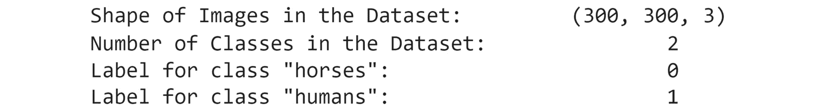图7.9:马或人类数据集信息
- Now, view the number of images in the dataset and its distribution of classes:
print(f'Total examples in Train Dataset: \ \t{len(our_train_dataset)}') pos_tr_samples = sum(i['label'] for i in our_train_dataset) print(f'Horses in Train Dataset: \t\t{len(our_train_dataset) \ - pos_tr_samples}') print(f'Humans in Train Dataset: \t\t{pos_tr_samples}') print(f'\nTotal examples in Test Dataset: \ \t{len(our_test_dataset)}') pos_ts_samples = sum(i['label'] for i in our_test_dataset) print(f'Horses in Test Dataset: \t\t{len(our_test_dataset) \ - pos_ts_samples}') print(f'Humans in Test Dataset: \t\t{pos_ts_samples}')
您应该得到以下输出:
图7.10:马或人类数据集分布
- Now, view some sample images in the training dataset, using the
tfds.show_examples()function:fig = tfds.show_examples(our_train_dataset, dataset_info)
此函数用于交互式使用，它显示并返回训练数据集中的图像图。
您的输出应该如下所示:

图7.11:样本训练图像
- View some sample images in the test dataset:
fig = tfds.show_examples(our_test_dataset, dataset_info)
您将获得以下输出:
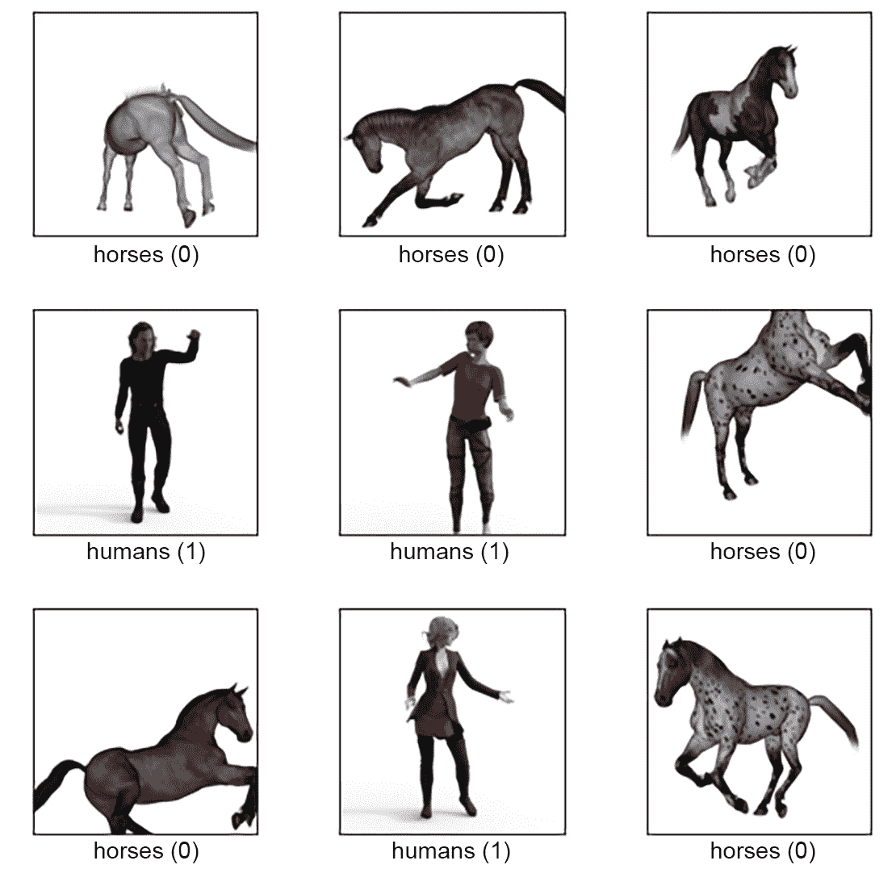图7.12:样本测试图像
- 最后，用
our_model = models.Sequential创建你的模型。设置第一层Conv2D，设置filters为16。内核是3x3。使用ReLU激活。因为这是第一个卷积层，你还需要设置input_shape到image_shape，你正在处理的彩色图像的尺寸。现在，添加MaxPool2D池层。然后，添加另一个Conv2D和MaxPool2D对以获得更多的模型深度，接着是展平层和致密层:our_cnn_model = models.Sequential([ layers.Conv2D(filters = 16, kernel_size = (3,3), \ input_shape = image_shape),\ layers.Activation('relu'),\ layers.MaxPool2D(pool_size = (2, 2)),\ layers.Conv2D(filters = 32, kernel_size = (3,3)),\ layers.Activation('relu'),\ layers.MaxPool2D(pool_size = (2, 2)),\ layers.Flatten(),\ layers.Dense(units = 512),\ layers.Activation('relu'),\ layers.Dense(units = 1),\ layers.Activation('sigmoid') ]) - Compile the model with
RMSPropforoptimizerset to the recommended default of0.001,lossasbinary_crossentropy, andmetricsset toaccfor accuracy. Print the model summary using thesummary()method:our_cnn_model.compile(optimizer=RMSprop(learning_rate=0.001), \ loss='binary_crossentropy',\ metrics=['acc'], loss_weights=None,\ weighted_metrics=None, run_eagerly=None,\ steps_per_execution=None) print(our_cnn_model.summary())这将打印模型摘要，包括层类型、输出形状和参数的详细信息:
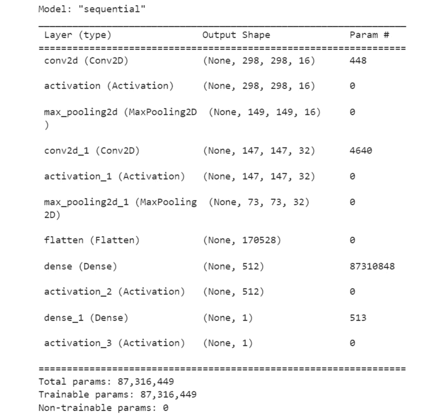
图7.13:模型摘要
在前面的截图中，您可以看到左侧列出了层和类型。这些层按照从第一层到最后一层、从上到下的顺序列出。输出形状显示在中间。指定层旁边列出了每个层的几个参数。在底部，您会看到总参数、可训练参数和不可训练参数的数量。
您已经能够探索卷积层和池层了。现在让我们深入到使用图像数据时的另一个重要组成部分:图像增强。
图像增强
扩充的定义是通过使某物在尺寸或数量上更大而使其更好。这正是数据或图像增强所做的。您使用增强为模型提供更多版本的图像训练数据。请记住，数据越多，模型的性能就越好。通过扩充你的数据，你可以以某种方式转换你的图像，使模型在真实数据上更好地一般化。要做到这一点，您需要转换您可以随意处理的图像，以便您可以使用您的增强图像以及原始图像数据集来进行比其他方式更丰富多样的训练。这可以改善结果并防止过度拟合。看看下面三张图片:
图7.14:增强的豹纹图像
很明显，这是三张照片中的同一只豹子。只是位置不同而已。由于卷积，神经网络仍然可以理解这一点。但是，通过使用图像增强，您可以提高模型学习平移不变性的能力。
与大多数其他类型的图像数据不同，您可以移动、旋转和移动图像来改变原始图像。这就产生了更多的数据，有了CNN，更多的数据和数据变化将会产生一个性能更好的模型。为了能够创建这些图像增强，看看如何在TensorFlow中使用加载的tf.data.Dataset对象来实现这一点。您将使用dataset.map()函数将预处理图像增强函数映射到您的数据集，即our_train_dataset:
from tensorflow import image as tfimage from tensorflow.keras.preprocessing import image as kimage
为此，您将使用tensorflow.image和tensorflow.keras.preprocessing.image包。这些软件包具有许多图像处理功能，可用于图像数据增强:
augment_dataset(image, label):
image = kimage.random_shift(image, wrg = 0.1, hrg = 0.1)
image = tfimage.random_flip_left_right(image)
return image, label
其他功能包括:
kimage.random_rotation:该功能允许您在指定的角度之间随机旋转图像。kimage.random_brightness:该功能随机调节亮度等级。kimage.random_shear:该函数应用剪切变换。kimage.random_zoom:该功能随机缩放图像。tfimage.random_flip_left_right:该功能随机水平翻转图像。tfimage.random_flip_up_down:该功能随机垂直翻转图像。
在下一步中，您将传递想要用tf.data.Dataset.map()函数增加的数据:
augment_dataset(image, label):
image = kimage.random_shift(image, wrg = 0.1, hrg = 0.1)
image = tfimage.random_flip_left_right(image)
return image, label
our_train_dataset = our_train_dataset.map(augment_dataset)
model.fit(our_train_dataset,\
epochs=50,\
validation_data=our_test_dataset)
在前面的代码块中，使用fit()，您只需要传递您已经创建的生成器。您需要传入epochs值。如果你不这样做，发电机将永远不会停止。fit()函数返回历史记录(绘制每次迭代的损失等等)。
你需要更多的功能添加到our_train_dataset中，然后才能在上面训练模型。使用batch()功能，您可以指定每批训练多少幅图像。使用cache()功能，您可以将数据集放入内存以提高性能。使用shuffle()功能，您可以将数据集的混洗缓冲区设置为数据集的整个长度，以实现真正的随机性。prefetch()功能也用于良好的性能:
our_train_dataset = our_train_dataset.cache()
our_train_dataset = our_train_dataset.map(augment_dataset)
our_train_dataset = our_train_dataset.shuffle\
(len(our_train_dataset))
our_train_dataset = our_train_dataset.batch(128)
our_train_dataset = our_train_dataset.prefetch\
(tf.data.experimental.AUTOTUNE)
既然您已经看到了如何在您的培训模型中实现增强，那么让我们更仔细地看看其中的一些转换在做什么。
这里有一个random_rotation、random_shift和random_brightnes实现的例子。使用以下代码将图像随机旋转到指定的值:
image = kimage.random_rotation(image, rg = 135)
在图7.15 中，可以看到random_rotation的结果。
图7.15:旋转范围
这些图像被随机旋转了135度。
random_shift用于横向随机移动像素。注意下面代码中的.15,这意味着图像可以随机移动15个像素:
image = kimage.random_shift(image, wrg = 0.15, hrg = 0)
下图显示了图像宽度的随机调整，最多调整15个像素:

图7.16:宽度移动范围
这里再次使用了random_shift，随机调整高度15个像素:
image = kimage.random_shift(image, wrg = 0, hrg = 0.15)
图7.17 显示了图像高度的随机调整，最多调整15个像素:
图7.17:高度移动范围
对于使用random_brightness的随机亮度等级，您将使用一个浮动值范围按百分比使图像变亮或变暗。任何低于1.0的东西都会使图像变暗。因此，在本例中，图像随机变暗10%到90%:
image = kimage.random_brightness(image, brightness_range=(0.1,0.9))
在下图中，您用random_brightness调节了亮度:
图7.18:亮度范围
现在您已经了解了一些图像增强选项，接下来看看如何使用批处理规范化来提高模型的性能。
批量归一化
在2015年，批次规范化，也称为批次规范，由 Christian Szegedy 和 Sergey Ioffe 提出。批处理范数是一种减少训练历元数量以提高性能的技术。批处理规范标准化小型批处理的输入，并“标准化”输入层。它最常用于卷积层之后，如下图所示:
图7.19:批量定额
下图显示了实现批处理规范化的一种常见方式。在以下示例中，您可以看到一个批次范数层跟随一个卷积层三次。然后是一个展平层，接着是两个致密层:
图7.20:层序列
批量范数有助于模型更好地泛化。对于batch norm训练的每个批次，模型都有不同的均值和标准差。因为批次平均值和标准偏差与真实的总体平均值和标准偏差略有不同，所以这些变化会作为您正在训练的噪声，使模型的总体性能更好。
下面是一个BatchNormalization实现的例子。您可以简单地添加一个批处理规范层，然后添加一个激活层:
model.add(layers.Conv2D(filters = 64, kernel_size = (3, 3), use_bias=False))
model.add(layers.BatchNormalization())
model.add(layers.Activation("relu"))
到目前为止，您已经创建了一个CNN模型，并学习了如何利用图像增强。现在，在接下来的练习中，您将把所有东西放在一起，用一些额外的卷积层构建一个CNN。
练习7.04:用附加卷积层构建CNN
你的新雇主对你在练习7.03 、打造CNN 中所取得的成绩很满意。既然最小可行产品 ( MVP )或原型已经完成，是时候构建一个更好的模型了。
在本练习中，您将向模型中添加额外的ANN层。您将向之前创建的卷积基础层添加额外的层。您将再次使用horses_or_humans数据集。
让我们开始吧。
因为您正在扩展练习7.03 、构建CNN ，并且使用相同的数据，所以从上一练习的最后一步开始:
- 创建一个函数来重新缩放图像，然后使用
map方法将该函数应用于训练和测试数据集。继续使用数据集的cache、shuffle、batch和prefetch方法构建您的训练和测试数据集管道:normalization_layer = layers.Rescaling(1./255) our_train_dataset = our_train_dataset.map\ (lambda x: (normalization_layer(x['image']), \ x['label']), \ num_parallel_calls = \ tf.data.experimental.AUTOTUNE) our_train_dataset = our_train_dataset.cache() our_train_dataset = our_train_dataset.shuffle\ (len(our_train_dataset)) our_train_dataset = our_train_dataset.batch(128) our_train_dataset = \ our_train_dataset.prefetch(tf.data.experimental.AUTOTUNE) our_test_dataset = our_test_dataset.map\ (lambda x: (normalization_layer(x['image']), \ x['label']),\ num_parallel_calls = \ tf.data.experimental.AUTOTUNE) our_test_dataset = our_test_dataset.cache() our_test_dataset = our_test_dataset.batch(32) our_test_dataset = our_test_dataset.prefetch\ (tf.data.experimental.AUTOTUNE)
- Fit the model. Specify the values of
epochsandvalidation_stepsand setverboseequal to1:history = our_cnn_model.fit\ (our_train_dataset, \ validation_data = our_test_dataset, \ epochs=15, \ validation_steps=8, \ verbose=1)输出如下所示:
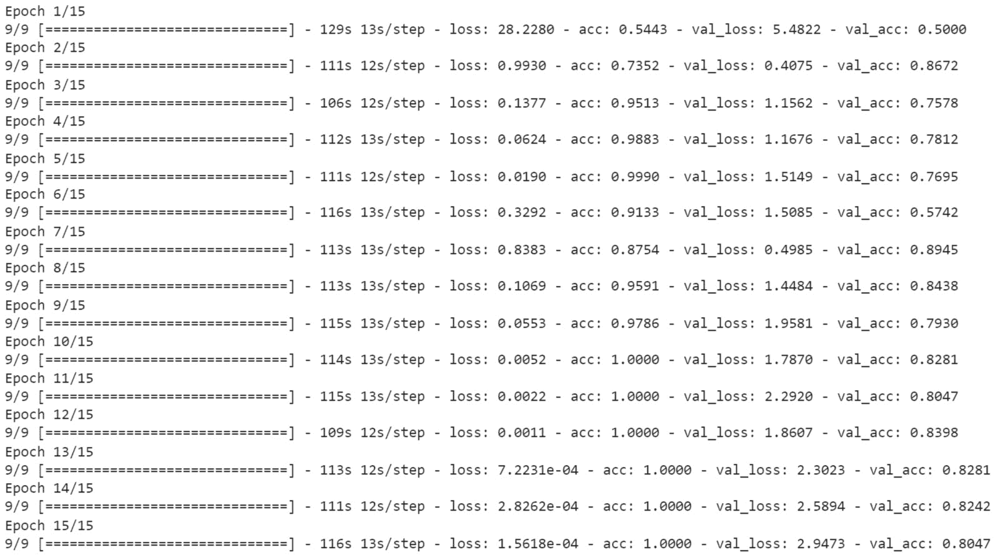图7.21:模型拟合过程
- Take a batch from the test dataset and plot the first image from the batch. Convert the image to an array, then use the model to predict what the image shows:
from matplotlib.pyplot import imshow for images, lables in our_test_dataset.take(1): imshow(np.asarray(images[0])) image_to_test = kimage.img_to_array(images[0]) image_to_test = np.array([image_to_test]) prediction = our_cnn_model.predict(image_to_test) print(prediction) if prediction > 0.5: print("Image is a human") else: print("Image is a horse")输出将包含以下详细信息:
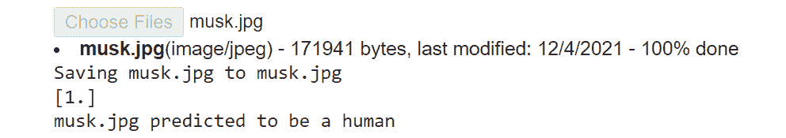图7.22:图像测试及其元数据的输出
对于预测，您有一张来自测试集的人的照片，以查看分类是什么。
- Take a look at what's happening with each successive layer. Do this by creating a list containing all names of the layers within the CNN and another list containing predictions on a random sample from each of the layers in the list created previously. Next, iterate through the list of names of the layers and their respective predictions and plot the features:
layer_outputs = [] for layer in our_cnn_model.layers[1:]: layer_outputs.append(layer.output) layer_names = [] for layer in our_cnn_model.layers: layer_names.append(layer.name) features_model = models.Model(inputs = our_cnn_model.input, \ outputs = layer_outputs) random_sample = our_train_dataset.take(1) layer_predictions = features_model.predict(random_sample) for layer_name, prediction in zip(layer_names, \ layer_predictions): if len(prediction.shape) != 4: continue num_features = prediction.shape[-1] size = prediction.shape[1] grid = np.zeros((size, size * num_features)) for i in range(num_features): img = prediction[0, :, :, i] img = ((((img - img.mean()) / img.std()) * 64) + 128) img = np.clip(img, 0, 255).astype('uint8') grid[:, i * size : (i + 1) * size] = img scale = 20. / num_features plt.figure(figsize=(scale * num_features, scale)) plt.title(layer_name) plt.imshow(grid)您应该会得到如下所示的内容:
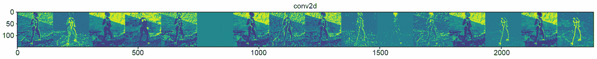
图7.23:不同层的转换
现在，您已经创建了自己的CNN模型，并使用它来确定图像是马还是人，现在您将关注如何对图像进行分类，看它是否是特定的类。
二值图像分类
二元分类是分类模型最简单的方法，因为它将图像分为两类。在这一章中，我们从卷积运算开始，讨论了如何将它用作图像转换器。然后，您学习了池层的作用以及最大池和平均池的区别。接下来，我们还了解了拼合图层如何将合并的要素地图转换为单个列。然后，您学习了如何以及为什么使用图像增强，以及如何使用批量规范化。这些是CNN区别于其他ann的关键组成部分。
在卷积基础层、池化层和标准化层之后，CNN的结构通常类似于迄今为止您已经建立的许多ann，具有一系列一个或多个密集层。与其他二进制分类器非常相似，二进制图像分类器终止于具有一个单元和一个sigmoid激活函数的密集层。为了提供更多的实用性，图像分类器可以用来分类两个以上的对象。这种分类器通常被称为对象分类器，您将在下一节中学习。
物体分类
在本节中，您将了解对象检测和分类。下一步是对包含两个以上类别的数据集进行影像分类。我们将涉及的用于对象分类的三种不同类型的模型是图像分类、带有定位的分类和检测:
- 图像分类:这涉及到用设定数量的类别进行训练，然后尝试确定这些类别中的哪一个显示在图像中。想想MNIST手写数据集。对于这些问题，您将使用传统的CNN。
- 定位分类:利用这种类型，模型试图预测物体在图像空间中的位置。对于这些型号，你使用一个简化的你只看一次 ( YOLO )或R-CNN。
- 检测:最后一种是检测。这是您的模型可以检测几个不同对象的地方，以及它们的位置。为此，你可以使用YOLO或R-CNN: 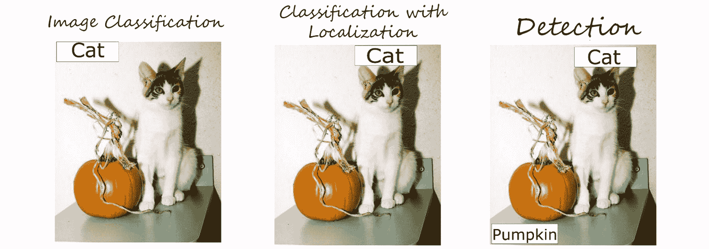
图7.24:对象分类类型
现在，您将简要了解一下使用Fashion-MNIST数据集的影像分类。Fashion-MNIST由Zalando文章图片的数据集编译而成。Zalando是一家专注于时尚的电子商务公司，总部位于德国柏林。数据集由10个类组成，训练集包含60，000幅28x28灰度图像和10，000幅测试图像。
- 导入张量流:
import tensorflow as tf
- 接下来，进行一些额外的导入，比如对于NumPy，Matplotlib，当然还有图层和模型。你会注意到这里你将使用额外的辍学层。如果你还记得，脱落层有助于防止过度拟合:
import numpy as np import matplotlib.pyplot as plt import tensorflow_datasets as tfds from tensorflow.keras.layers import Input, Conv2D, Dense, Flatten, \ Dropout, GlobalMaxPooling2D, Activation, Rescaling from tensorflow.keras.models import Model from sklearn.metrics import confusion_matrix, ConfusionMatrixDisplay import itertools import matplotlib.pyplot as plt
- 在他们决定包含的任何一个数据集中使用
tdfs加载Fashion-MNIST数据集。其他还有CIFAR-10和CIFAR-100，仅举几个例子:(our_train_dataset, our_test_dataset), \ dataset_info = tfds.load(\ 'fashion_mnist' , split = ['train', 'test'] , data_dir = 'content/FashionMNIST/' , shuffle_files = True , as_supervised = True , with_info = True) assert isinstance(our_train_dataset, tf.data.Dataset)
- Check the data for its properties:
image_shape = dataset_info.features["image"].shape print(f'Shape of Images in the Dataset: \t{image_shape}') num_classes = dataset_info.features["label"].num_classes print(f'Number of Classes in the Dataset: \t{num_classes}') names_of_classes = dataset_info.features["label"].names print(f'Names of Classes in the Dataset: \t{names_of_classes}\n') for name in names_of_classes: print(f'Label for class \ "{name}": \t\t{dataset_info.features["label"].\ str2int(name)}')这将为您提供以下输出:
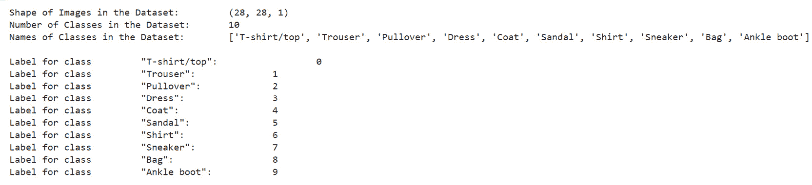图7.25:数据属性的详细信息
- Now, print the total examples of the train and test data:
print(f'Total examples in Train Dataset: \ \t{len(our_train_dataset)}') print(f'Total examples in Test Dataset: \ \t{len(our_test_dataset)}')这将为您提供以下输出:
图7.26:训练和测试数据集的细节
- 使用函数式API构建您的模型:
input_layer = Input(shape=image_shape) x = Conv2D(filters = 32, kernel_size = (3, 3), \ strides=2)(input_layer) x = Activation('relu')(x) x = Conv2D(filters = 64, kernel_size = (3, 3), strides=2)(x) x = Activation('relu')(x) x = Conv2D(filters = 128, kernel_size = (3, 3), strides=2)(x) x = Activation('relu')(x) x = Flatten()(x) x = Dropout(rate = 0.2)(x) x = Dense(units = 512)(x) x = Activation('relu')(x) x = Dropout(rate = 0.2)(x) x = Dense(units = num_classes)(x) output = Activation('softmax')(x) our_classification_model = Model(input_layer, output) - Compile and fit your model. With
compile()method, useadamas your optimizer, set the loss tosparse_categorical_crossentropy, and set theaccuracymetric. Then, callmodel.fit()on your training and validation sets:our_classification_model.compile( optimizer='adam', \ loss='sparse_categorical_crossentropy', metrics=['accuracy'], loss_weights=None, weighted_metrics=None, run_eagerly=None, steps_per_execution=None ) history = our_classification_model.fit(our_train_dataset, validation_data=our_test_dataset, epochs=15)这将产生以下输出:
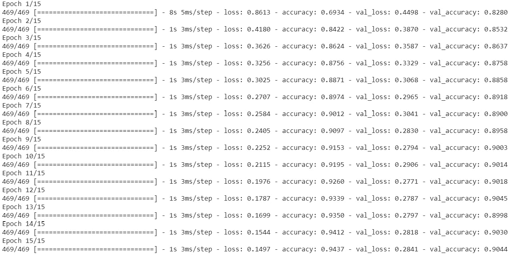图7.27:函数返回历史
- Use
matplotlib.pyplotto plot the loss and accuracy:def plot_trend_by_epoch(tr_values, val_values, title): epoch_number = range(len(tr_values)) plt.plot(epoch_number, tr_values, 'r') plt.plot(epoch_number, val_values, 'b') plt.title(title) plt.xlabel('epochs') plt.legend(['Training '+title, 'Validation '+title]) plt.figure() hist_dict = history.history tr_accuracy, val_accuracy = hist_dict['accuracy'], \ hist_dict['val_accuracy'] plot_trend_by_epoch(tr_accuracy, val_accuracy, "Accuracy")这将给出以下输出图:
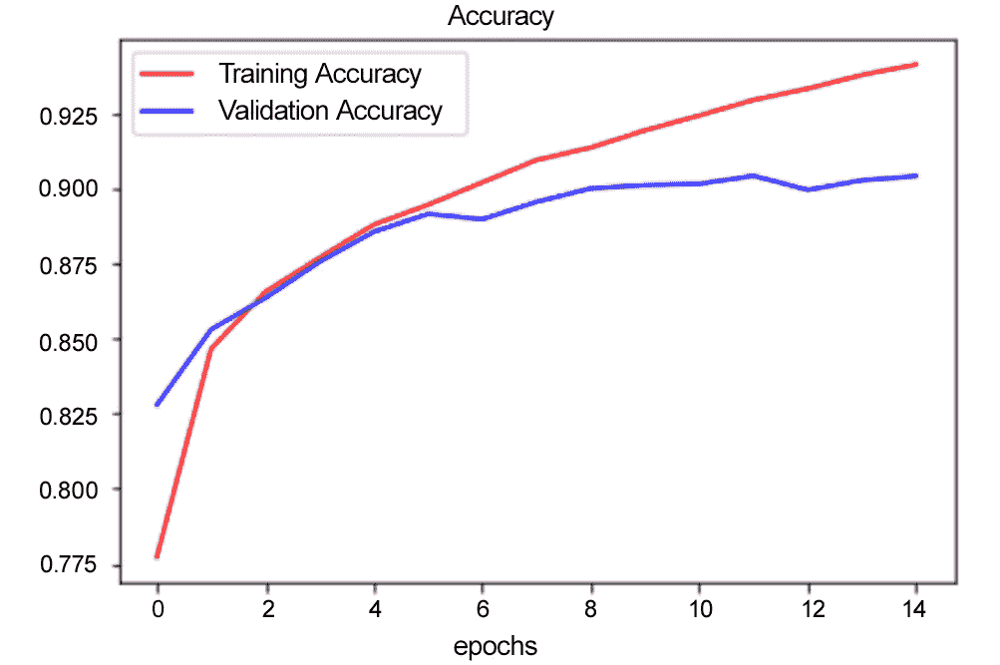图7.28:使用matplotlib.pyplot的精度图
- Plot the validation loss and training loss. Use the following code:
tr_loss, val_loss = hist_dict['loss'], hist_dict['val_loss'] plot_trend_by_epoch(tr_loss, val_loss, "Loss")
这将给出以下输出图:
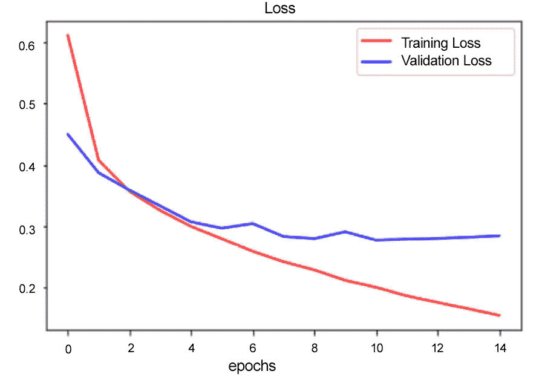
图7.29:验证损失和培训损失
从作为时期函数的精度和损耗曲线可以看出，精度提高，损耗降低。在验证集上，两者都开始趋于平稳，这是停止训练以防止过度适应训练数据集的好信号。
在下一个练习中，您将构建一个CNN来将来自CIFAR-10数据集的图像分为10个不同的类别。
练习7.05:构建CNN
这家初创公司现在希望扩展其功能，处理更多的类和更大的图像数据集。你的挑战是准确预测图像的类别。
您将使用的数据集是CIFAR-10数据集，该数据集包含10个类别的60，000张32x32彩色图像:飞机、汽车、鸟类、猫、鹿、狗、青蛙、马、船只和卡车。每个类有6，000幅图像，整个数据集包含50，000幅训练图像和10，000幅测试图像。
有关数据集的更多信息可在从微小图像中学习多层要素(http://www . cs . Toronto . edu/~ kriz/Learning-Features-2009-tr . pdf)、 Alex Krizhevsky 、 2009 :
- 启动新的Jupyter笔记本，导入TensorFlow库:
import tensorflow as tf
- 导入所需的其他附加库:
import numpy as np import matplotlib.pyplot as plt import tensorflow_datasets as tfds from tensorflow.keras.layers import Input, Conv2D, Dense, Flatten, \ Dropout, GlobalMaxPooling2D, Activation, Rescaling from tensorflow.keras.models import Model from sklearn import metrics import confusion_matrix, \ ConfusionMatrixDisplay import itertools import matplotlib.pyplot as plt
- 直接从
tfds加载CIFAR-10数据集，如下:(our_train_dataset, our_test_dataset), \ dataset_info = tfds.load('cifar10',\ split = ['train', 'test'],\ data_dir = 'content/Cifar10/',\ shuffle_files = True,\ as_supervised = True,\ with_info = True) assert isinstance(our_train_dataset, tf.data.Dataset) - Print the properties of your dataset using the following code:
image_shape = dataset_info.features["image"].shape print(f'Shape of Images in the Dataset: \t{image_shape}') num_classes = dataset_info.features["label"].num_classes print(f'Number of Classes in the Dataset: \t{num_classes}') names_of_classes = dataset_info.features["label"].names print(f'Names of Classes in the Dataset: \t{names_of_classes}\n') for name in names_of_classes: print(f'Label for class "{name}": \ \t\t{dataset_info.features["label"].str2int(name)}') print(f'Total examples in Train Dataset: \ \t{len(our_train_dataset)}') print(f'Total examples in Test Dataset: \ \t{len(our_test_dataset)}')这将给出以下带有属性和类数量的输出:
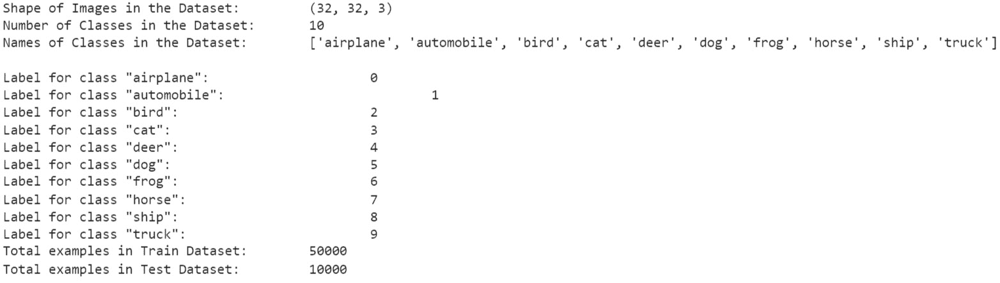图7.30:类的数量
- 建立训练和测试数据管道，如练习7.03 、建立CNN :
normalization_layer = Rescaling(1./255) our_train_dataset = our_train_dataset.map\ (lambda x, y: (normalization_layer(x), y),\ num_parallel_calls = \ tf.data.experimental.AUTOTUNE) our_train_dataset = our_train_dataset.cache() our_train_dataset = our_train_dataset.shuffle\ (len(our_train_dataset)) our_train_dataset = our_train_dataset.batch(128) our_train_dataset = our_train_dataset.prefetch\ (tf.data.experimental.AUTOTUNE) our_test_dataset = our_test_dataset.map\ (lambda x, y: (normalization_layer(x), y),\ num_parallel_calls = \ tf.data.experimental.AUTOTUNE) our_test_dataset = our_test_dataset.cache() our_test_dataset = our_test_dataset.batch(1024) our_test_dataset = our_test_dataset.prefetch\ (tf.data.experimental.AUTOTUNE)
所示 - 使用函数式API构建模型。设置形状、层类型、步幅和激活功能:
input_layer = Input(shape=image_shape) x = Conv2D(filters = 32, \ kernel_size = (3, 3), strides=2)(input_layer) x = Activation('relu')(x) x = Conv2D(filters = 64, kernel_size = (3, 3), strides=2)(x) x = Activation('relu')(x) x = Conv2D(filters = 128, kernel_size = (3, 3), strides=2)(x) x = Activation('relu')(x) x = Flatten()(x) x = Dropout(rate = 0.5)(x) x = Dense(units = 1024)(x) x = Activation('relu')(x) x = Dropout(rate = 0.2)(x) x = Dense(units = num_classes)(x) output = Activation('softmax')(x) our_classification_model = Model(input_layer, output) - Compile and fit your model. Be sure to use your GPU for this, if possible, as it will speed up the process quite a bit. If you decide not to use the GPU and your machine has difficulty in terms of computation, you can decrease the number of epochs accordingly:
our_classification_model.compile( optimizer='adam', \ loss='sparse_categorical_crossentropy', metrics=['accuracy'], loss_weights=None, weighted_metrics=None, run_eagerly=None, steps_per_execution=None ) print(our_classification_model.summary()) history = our_classification_model.fit(our_train_dataset, validation_data=our_test_dataset, epochs=15)该函数将返回以下历史记录:
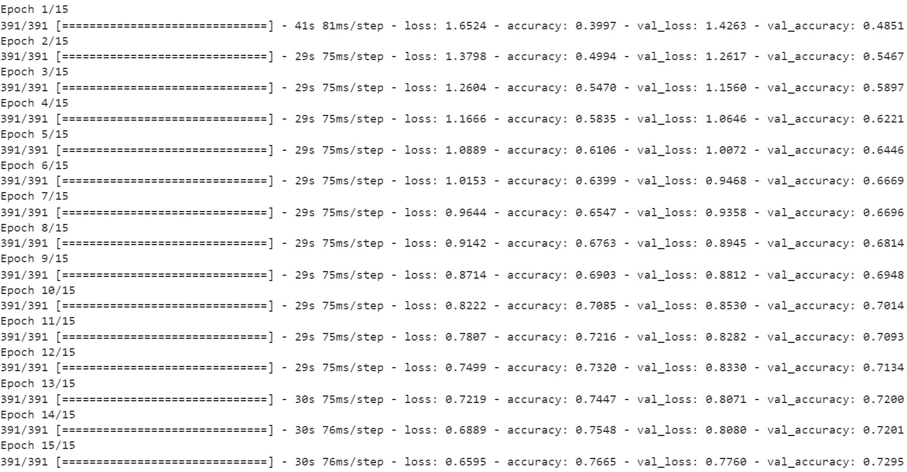图7.31:拟合模型
- Get a visual representation of the model's performance by plotting your loss and accuracy per epoch:
def plot_trend_by_epoch(tr_values, val_values, title): epoch_number = range(len(tr_values)) plt.plot(epoch_number, tr_values, 'r') plt.plot(epoch_number, val_values, 'b') plt.title(title) plt.xlabel('epochs') plt.legend(['Training '+title, 'Validation '+title]) plt.figure() hist_dict = history.history tr_loss, val_loss = hist_dict['loss'], hist_dict['val_loss'] plot_trend_by_epoch(tr_loss, val_loss, "Loss")这将产生以下情节:
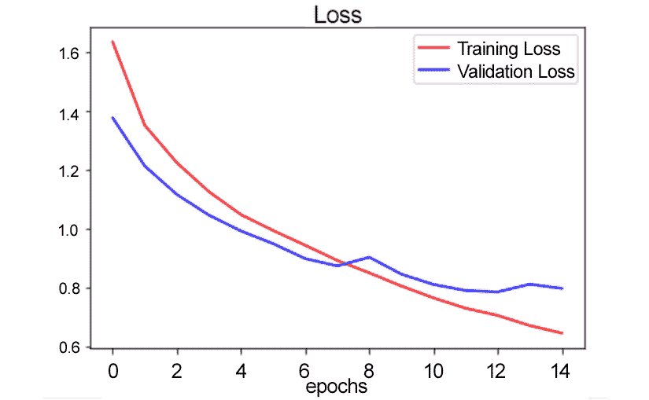图7.32:损失图
- Next, get an accuracy plot by using the following code:
tr_accuracy, val_accuracy = hist_dict['accuracy'], \ hist_dict['val_accuracy'] plot_trend_by_epoch(tr_accuracy, val_accuracy, "Accuracy")这将给出以下情节:
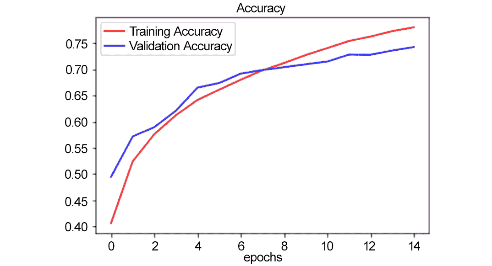图7.33:精度图
- Plot the confusion matrix without normalization:
test_labels = [] test_images = [] for image, label in tfds.as_numpy(our_test_dataset.unbatch()): test_images.append(image) test_labels.append(label) test_labels = np.array(test_labels) predictions = our_classification_model.predict(our_test_dataset).argmax(axis=1) conf_matrix = confusion_matrix(test_labels, predictions) disp = ConfusionMatrixDisplay(conf_matrix, \ display_labels = names_of_classes) fig = plt.figure(figsize = (12, 12)) axis = fig.add_subplot(111) disp.plot(values_format = 'd', ax = axis)这将产生以下输出:
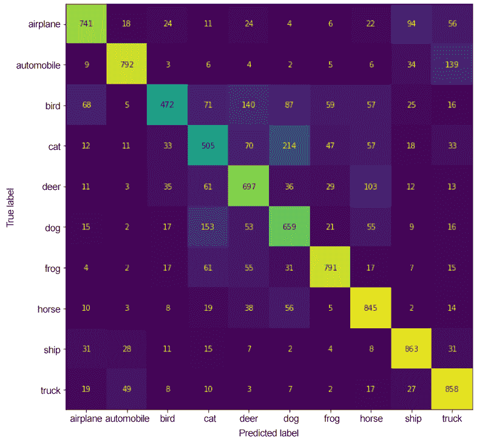图7.34:没有归一化的混淆矩阵
- Use the following code to plot the confusion matrix with normalization:
conf_matrix = conf_matrix.astype\ ('float') / conf_matrix.sum(axis=1) \ [:, np.newaxis] disp = ConfusionMatrixDisplay(\ conf_matrix, display_labels = names_of_classes) fig = plt.figure(figsize = (12, 12)) axis = fig.add_subplot(111) disp.plot(ax = axis)输出将如下所示:
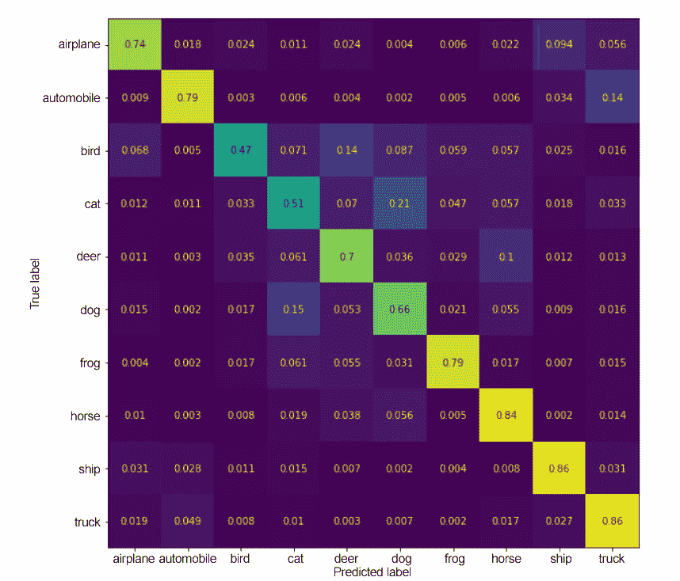图7.35:归一化的混淆矩阵
- Take a look at one of the images that the model got wrong. Plot one of the incorrect predictions with the following code:
incorrect_predictions = np.where(predictions != test_labels)[0] index = np.random.choice(incorrect_predictions) plt.imshow(test_images[index]) print(f'True label: {names_of_classes[test_labels[index]]}') print(f'Predicted label: {names_of_classes[predictions[index]]}')输出将如下所示:
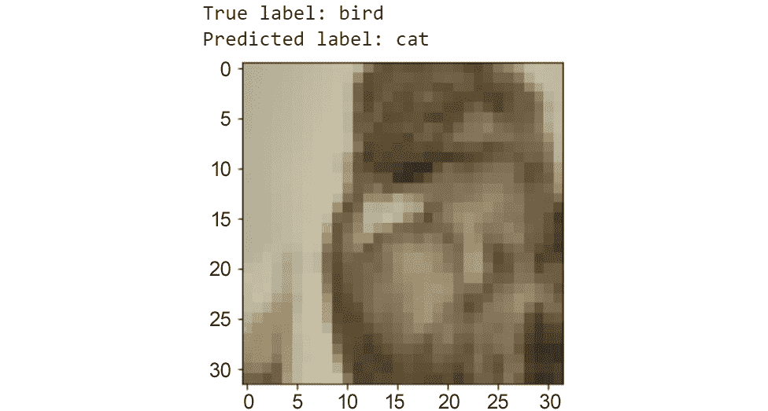
图7.36:真实结果与预测结果的对比
你会注意到上面写着True label: bird和Predicted label: cat。这意味着模型预测这个图像是一只猫，但它是一只鸟。由于分辨率只有32x32，图像模糊；不过，成绩还不错。公平地说，人类很难识别图像是一只狗还是一只猫。
现在你已经完成了这一章，是时候用活动7.01 、构建具有更多ANN层的CNN来测试你所学的一切了，在这里你将构建一个具有额外ANN层的CNN。
活动7.01:用M个矿层构建CNN
到目前为止，你为之工作的初创公司很喜欢你的工作。他们让你创建一个新的模型，能够对100个不同类别的图像进行分类。
在这个活动中，你将把你所学的一切用于用CIFAR-100构建你自己的分类器。CIFAR-100是CIFAR-10数据集的更高级版本，有100个类，常用于机器学习研究中的性能基准测试。
- 开始一个新的Jupyter笔记本。
- 导入TensorFlow库。
- 导入您将需要的其他库，包括NumPy、Matplotlib、Input、Conv2D、Dense、Flatten、Dropout、GlobalMaxPooling2D、Activation、Model、confusion_matrix和itertools。
- Load the
CIFAR-100dataset directly fromtensorflow_datasetsand view its properties from the metadata, and build a train and test data pipeline: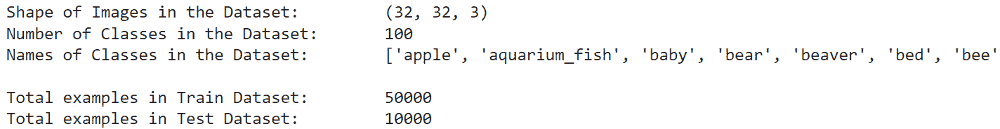图7.37:CIFAR-100数据集的属性
- 创建一个函数来缩放图像。然后，通过重新缩放、缓存、混排、批处理和预取图像来构建测试和训练数据管道。
- 使用
Conv2D和Flatten等功能API构建模型。 - Compile and fit the model using
model.compileandmodel.fit: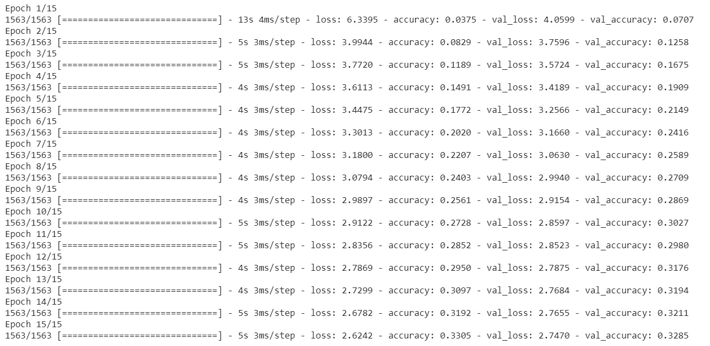图7.38:模型拟合
- Plot the loss with
plt.plot. Remember to use the history collected during themodel.fit()procedure: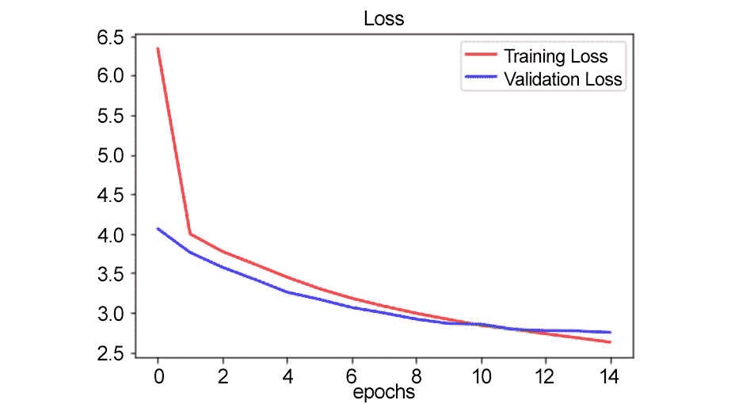图7.39:损失与时期
- Plot the accuracy with
plt.plot: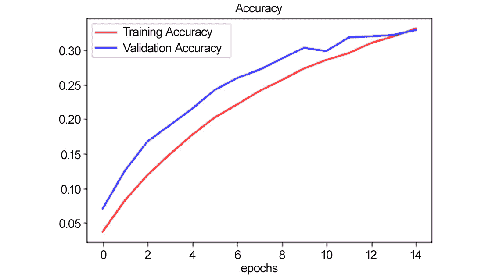图7.40:准确度与时期
- 为数据集中的不同类指定标签。
- Display a misclassified example with
plt.imshow: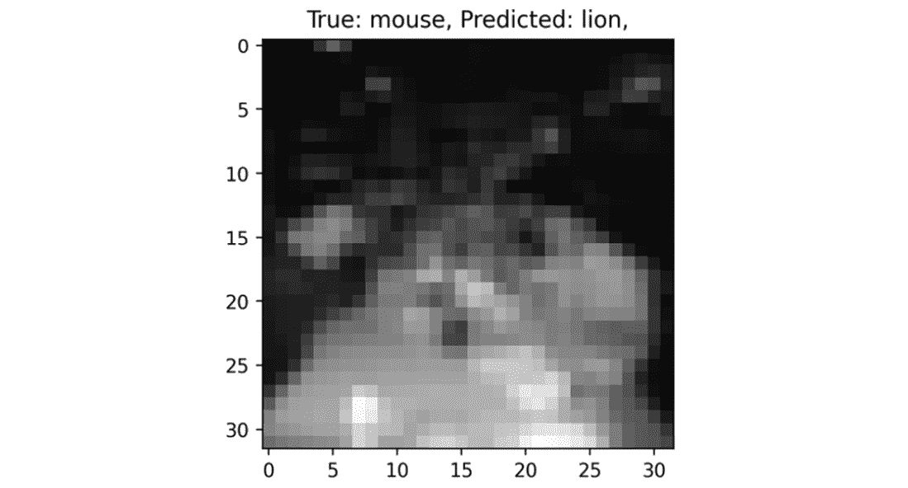
图7.41:错误的分类示例
注意
这个活动的解决方案可以通过这个链接找到。
总结
本章介绍了CNN。我们回顾了神经元、层、模型架构和张量等核心概念，以理解如何创建有效的CNN。
您学习了卷积运算，并探索了内核和特性映射。我们分析了如何组装CNN，然后探讨了不同类型的池层以及何时应用它们。
然后，您学习了stride操作，以及如果需要，如何使用填充在图像周围创建额外的空间。然后，我们深入研究了扁平化层，以及它如何能够将数据转换为下一层的1D数组。在最后的活动中，你把你学到的所有东西都拿来测试，因为你遇到了几个分类问题，包括CIFAR-10甚至CIFAR-100。
完成这一章后，你就可以自信地用CNN来解决图像分类问题了。
在下一章中，您将了解预训练模型，以及如何通过在预训练模型上添加人工神经网络层并根据您自己的训练数据微调权重，将它们用于您自己的应用。